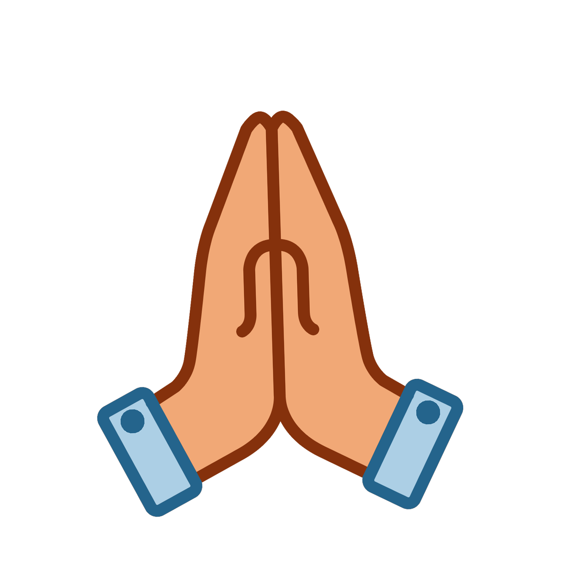

首页
离开
帮助
万圣节
圣诞节
复活节
升天节
受难节
升天节简介
耶稣升天节处于复活节和圣灵降临节之间。活节40天后的星期四是耶稣升天节，第50天为圣灵降临节，又称“五旬节”。基督升天节（星期四）之前的三天，即星期一、二、三，被称为祈祷周，或祈祷日。也有译成祈求丰收日的。 大部分的天主教教堂都会先在12月24日的平安夜，亦即12月25日凌晨举行子夜弥撒，而一些基督教会则会举行报佳音，然后在12月25日庆祝圣诞节；基督教的另一大分支——东正教的圣诞节庆则在每年的1月7日。
升天节意义
最早，这是由罗马天主教会在公元4世纪引进的。公元469年，高卢Vienne的主教在那里引进祈祷日。511年，这个祈祷日已经在整个高卢地区成为习俗。600年时，格雷高尔大教皇致力于在这几天进行宗教队列行。这种队列行总是以圣彼得大教堂的一个弥撒结束。1969年，梵蒂冈取消了这种队列行。800年时，罗马开始进行祈祷游行，直到今天每年这时仍然举行，很受人喜爱。

升天节意义
一年一度的圣母升天节即将来临，作为孝爱圣母的神子，我愿与大家一起分享、反省和默思有关圣母荣召升天的意义与价值以及这一伟大节日对我们所有基督信徒的启示与鼓励，好使我们每一位天主的儿女能在效法圣母追随基督，奔赴天国修德成圣的旅途当中更有信心与力量，争做完善的基督门徒，为基督、为教会做生活的见证，使天主的国早日来临！